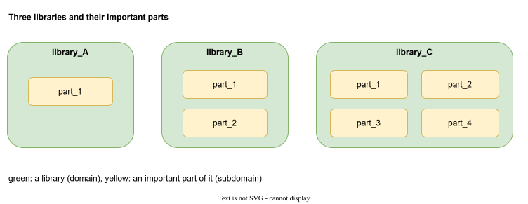
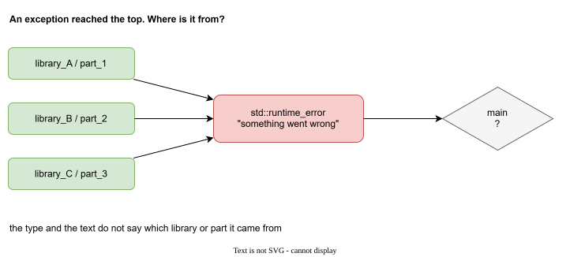
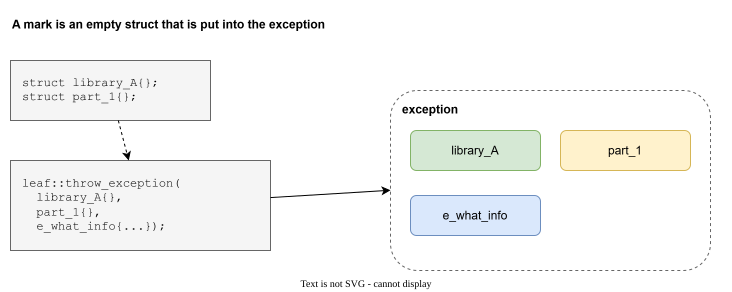
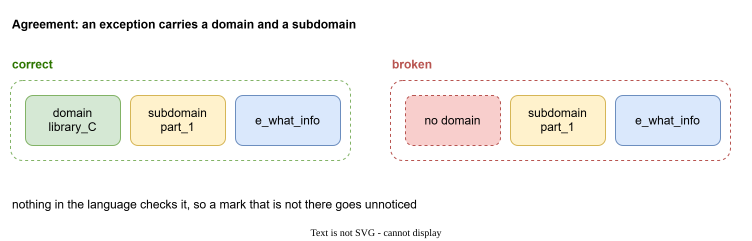
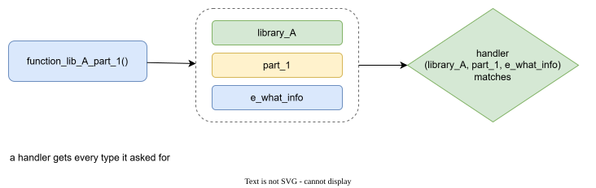
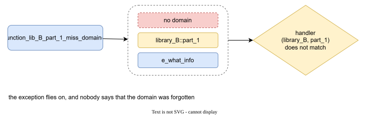
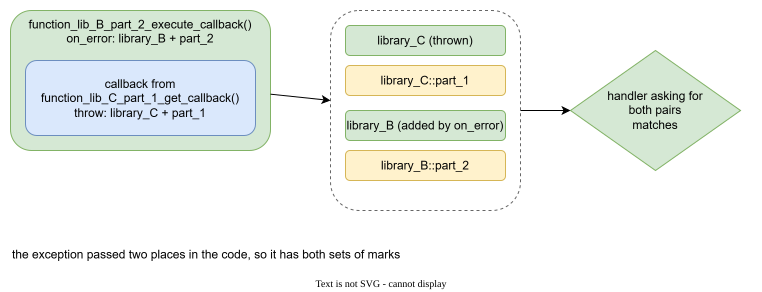
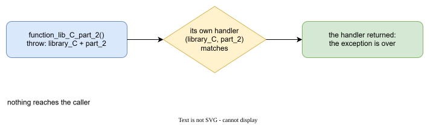
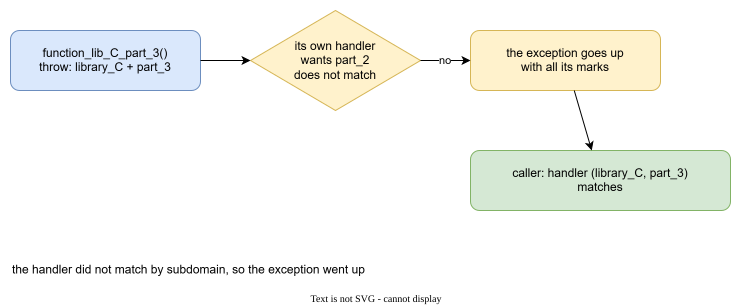
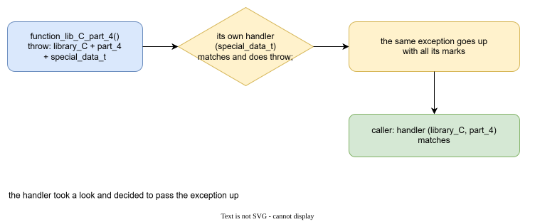

A typical project¶
Libraries and their parts¶
Imagine an ordinary C++ project. It is built from libraries. Every library has a few parts that matter: a module, a layer, a component.

Here there are three libraries, library_A, library_B, library_C, with one to four parts each.
Where does the exception come from?¶
Code of one library calls code of another. When something fails deep inside, an exception travels up through all of them and arrives at the top.

By then the type and the text rarely say where it started. We want to know: which library, which part.
Domains, subdomains and marks¶
The answer is to let every throw say where it is from. Two names help to talk about it:
- a domain is the library the code belongs to
- a subdomain is the part of that library
and the information itself is a mark: an empty struct that you put into the exception. It carries no data. Its type is the information.

Note
Nothing is invented here. A mark is an ordinary Boost.LEAF type that is put into an exception, exactly as in the first of the three ideas. "Domain" and "subdomain" are only names for two groups of such types that turn out to be useful for a project made of libraries.
Declare the marks in one header¶
Keep every mark in one header, so that the throwing code and the catching code agree:
namespace exception
{
namespace domain
{
struct library_A{};
struct library_B{};
struct library_C{};
}// namespace domain
namespace subdomain
{
namespace library_A { struct part_1{}; }
namespace library_B { struct part_1{}; struct part_2{}; }
namespace library_C { struct part_1{}; struct part_2{}; struct part_3{}; struct part_4{}; }
}// namespace subdomain
namespace details
{
struct special_data_t{};
}// namespace details
struct e_what_info
{
std::string what;
};
}// namespace exception
| group | meaning |
|---|---|
domain |
the library |
subdomain |
a part of a library |
details |
clarifying details, anything you need |
e_* structs |
payloads with data, such as a text or a path |
The agreement¶
We add one rule:
An exception must contain a domain and a subdomain.

It is only an agreement. Nothing in C++ or LEAF checks it. Keep it in mind, because the next cases show where it gets lost.
Six situations¶
All six use only Boost.LEAF. The functions are code of the three libraries. The top of the program calls them under leaf::try_catch.
Case 1: a plain throw¶
A function of library_A throws with its domain, its subdomain and a text:
void function_lib_A_part_1()
{
leaf::throw_exception(
exception::domain::library_A{},
exception::subdomain::library_A::part_1{},
exception::e_what_info{ "library_A, part_1" }
);
}
The caller handles it with a handler that asks for those types:
leaf::try_catch(
[]{ function_lib_A_part_1(); },
[](
const exception::domain::library_A&,
const exception::subdomain::library_A::part_1&,
const exception::e_what_info& info
)
{
std::cout << "caught in library_A, part_1: " << info.what << '\n';
}
);

caught in library_A, part_1: library_A, part_1
Case 2: a domain is forgotten¶
A function of library_B forgets the domain:
void function_lib_B_part_1_miss_domain()
{
leaf::throw_exception(
exception::subdomain::library_B::part_1{},
exception::e_what_info{ "library_B, part_1" }
);
}
A handler that asks for the domain and the subdomain of library_B does not match:
try
{
leaf::try_catch(
[]{ function_lib_B_part_1_miss_domain(); },
[](const exception::domain::library_B&, const exception::subdomain::library_B::part_1&)
{
std::cout << "caught in library_B, part_1\n";
}
);
}
catch (const std::exception&)
{
std::cout << "nobody handled it, and nobody said why\n";
}

nobody handled it, and nobody said why
The agreement is broken, and no one noticed. The exception just flew past every handler. This is the first thing that we will want to fix.
Case 3: an exception gets the marks of a second domain¶
A function of library_B calls a callback that comes from library_C. It adds its own marks with leaf::on_error:
void function_lib_B_part_2_execute_callback(std::function<void()> callback)
{
// attach the domain and subdomain of the place that called the callback
auto load = leaf::on_error(
exception::domain::library_B{},
exception::subdomain::library_B::part_2{}
);
callback();
}
The callback comes from library_C and throws with its own marks:
std::function<void()> function_lib_C_part_1_get_callback()
{
return []
{
leaf::throw_exception(
exception::domain::library_C{},
exception::subdomain::library_C::part_1{},
exception::e_what_info{ "callback from library_C, part_1" }
);
};
}
The exception passes through two places, and carries the marks of both:
leaf::try_catch(
[]
{
function_lib_B_part_2_execute_callback(function_lib_C_part_1_get_callback());
},
[](
const exception::domain::library_B&,
const exception::subdomain::library_B::part_2&,
const exception::domain::library_C&,
const exception::subdomain::library_C::part_1&
)
{
std::cout << "caught: library_C, part_1 called from library_B, part_2\n";
}
);

caught: library_C, part_1 called from library_B, part_2
So the exception tells not only where it started, but also who called.
Case 4: a library handles its own exception¶
A function of library_C catches its own exception inside:
void function_lib_C_part_2()
{
leaf::try_catch(
[]
{
leaf::throw_exception(
exception::domain::library_C{},
exception::subdomain::library_C::part_2{},
exception::e_what_info{ "library_C, part_2" }
);
},
[](const exception::domain::library_C&, const exception::subdomain::library_C::part_2&)
{
std::cout << "handled inside library_C, part_2\n";
}
);
}

handled inside library_C, part_2
The handler returned, and the exception is over. Nothing reaches the caller.
Case 5: a handler does not match¶
The same shape, but the handler asks for part_2 while the exception has part_3:
void function_lib_C_part_3()
{
leaf::try_catch(
[]
{
leaf::throw_exception(
exception::domain::library_C{},
exception::subdomain::library_C::part_3{},
exception::e_what_info{ "library_C, part_3" }
);
},
// asks for part_2, but the exception has part_3
[](const exception::domain::library_C&, const exception::subdomain::library_C::part_2&)
{
std::cout << "handled inside library_C, part_3\n";
}
);
}
The handler does not match, so the exception goes up with all its marks. The caller handles it:
leaf::try_catch(
[]{ function_lib_C_part_3(); },
[](const exception::domain::library_C&, const exception::subdomain::library_C::part_3&)
{
std::cout << "main: caught library_C, part_3\n";
}
);

main: caught library_C, part_3
Case 6: a handler looks and passes it up¶
A handler matches, does something, and rethrows with throw;:
void function_lib_C_part_4()
{
leaf::try_catch(
[]
{
leaf::throw_exception(
exception::domain::library_C{},
exception::subdomain::library_C::part_4{},
exception::details::special_data_t{},
exception::e_what_info{ "library_C, part_4" }
);
},
[](const exception::details::special_data_t&)
{
std::cout << "inner handler: special data, pass it up\n";
throw;
}
);
}
The caller still sees all the marks:
leaf::try_catch(
[]{ function_lib_C_part_4(); },
[](const exception::domain::library_C&, const exception::subdomain::library_C::part_4&)
{
std::cout << "main: caught library_C, part_4\n";
}
);

inner handler: special data, pass it up
main: caught library_C, part_4
What we have, and what is missing¶
With Boost.LEAF alone we can mark the exceptions of a project, add marks on the way up, handle by marks, and pass an exception on.
Case 2 showed what is missing: nobody noticed that a mark was not there. The next page is about that: Catching any set of types.